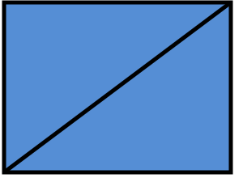

Introducción
1. ¿Qué son los gráficos vectoriales?
Dentro de la web se trabajan dos tipos de imagen:
- -Imágenes de mapas de bits:
- Son definidas usando una grilla de pixeles. Ejemplos: Bitmap (.bmp), PNG (.png), JPEG (.jpg) y GIF (.gif).
- -Imágenes vectoriales definidas:
- Están definidas usando logaritmos. Contiene definiciones de formas y rutas que la computadora puede usar para calcular cómo deve verse la imagen cuando aparece en pantalla. Ejemplo: SVG (.svg).


2. ¿Qué es SVG?

Es un formato gráfico basado en XML para crear imágenes vectoriales. Tiene un lenguaje de marcado (como HTML).
Historia
Es una recomendación del W3C. Se comenzó a desarrollar por ellos en 1999 y en 2001 sacaron su primera versión.
Para el año 2004, Firefox lo implementó en su buscador al igual que Google Chrome en 2007 y la versión 9 de Internet Explorer.
Actualmente está en la versión 1.1.
Ventajas del formato.
- -
- -No pierde calidad por el zoom.
- -Se puede escalar.
- -Se muestra en forma progresiva.
- -Se puede reducir su tamaño a travéz del formato de compresión GZIP.
- -Se le pueden aplicar estilos CSS
- -Se puede modificar con Java Script
- -Al ser XML, es indexable por los buscadores.
- -Es más ligero en tamaño comparado con su versión en mapa de bits.
Desventajas del formato
- -No es un formato accesible para el usuario común.
- -No sustituye a otros formatos.
- -Tiene problemas de compatibilidad.
- -Puede perjudicar el ratio texto/código de una página web.